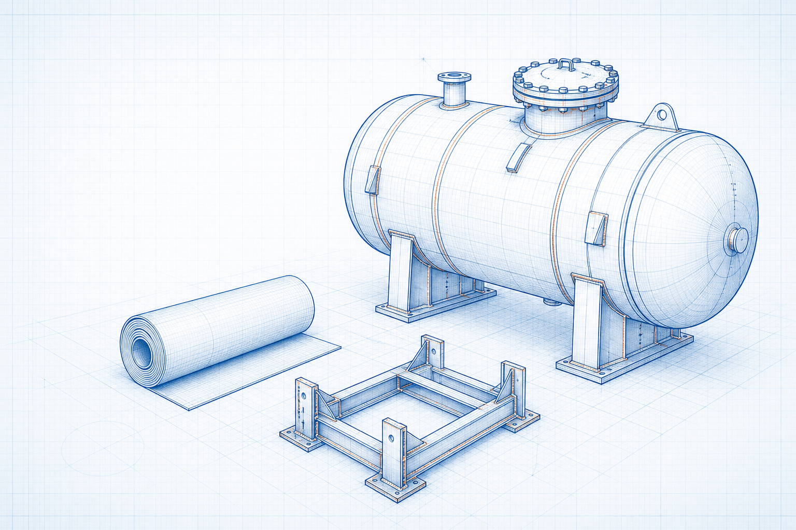

Engineering principle
Factor of Safety, Deflection and Allowable Stress Basics
Factor of safety, allowable stress and deflection limits help relate component demand to strength and serviceability. They must be selected from the applicable code, load case, material basis and project requirements.

- Content type
- Engineering principle
- Level
- Engineering › Mechanical Engineering and Fabrication › Mechanics of Materials › Strength and Serviceability › Factor of Safety, Deflection and Allowable Stress Basics
- Audience
- Student · Design engineer · Project engineer · Plant engineer
- Last reviewed
- 30 August 2026
What Is Factor of Safety, Deflection and Allowable Stress Basics?
Factor of safety, allowable stress and deflection limits help relate component demand to strength and serviceability. They must be selected from the applicable code, load case, material basis and project requirements.
Why Is It Important in Engineering?
Strength checks address whether a component can resist defined loads; serviceability checks address usable movement, alignment, vibration or appearance. The applicable design standard establishes the load combinations and allowable criteria.
Key Terms and Definitions
- Factor of safety
- A defined engineering quantity or concept used in this topic.
- allowable stress
- Use the applicable source definition and stated service basis.
- deflection
- Use the applicable source definition and stated service basis.
- load combination and serviceability.
- Use the applicable source definition and stated service basis.
Fundamental Principle
Strength checks address whether a component can resist defined loads; serviceability checks address usable movement, alignment, vibration or appearance. The applicable design standard establishes the load combinations and allowable criteria.
Formulae, Symbols and Units
Useful relationship
Factor of safety = relevant strength / calculated demand
This relation is a preliminary reference only; identify its definition, unit system and valid range before use.
Unit consistency
Use one declared unit system and ensure all properties and dimensions use the same condition and reference basis.
Assumptions and Validity Range
- The selected relation or principle matches the actual geometry, service and operating condition.
- Inputs are traceable to the current design basis, drawing, supplier data or measured condition.
- Applicable codes, safety requirements and qualified review are addressed separately.
Factors Affecting the Result
Operating basis
Uncertainty in loading and material properties.
Equipment and geometry
Failure mode including yielding, buckling, fatigue or fracture.
Service condition
Code requirements, support conditions and functional tolerances.
Step-by-Step Engineering Method
- Define the duty, operating envelope and project boundary for Factor of Safety, Deflection and Allowable Stress Basics.
- Collect current geometry, material/fluid data, loads and relevant performance requirements.
- Select an applicable documented method, property source or supplier reference.
- Calculate or assess the required result using one consistent basis.
- Check limitations, interfaces, applicable code requirements and the need for qualified review.
Illustrative Engineering Example
Hypothetical example — not a design calculation
A project team compares a preliminary option against the stated operating duty. The relevant inputs are assembled on one basis, the governing relationship is applied, and the result is checked against equipment, layout, safety and maintenance constraints before a final decision.
Industrial Applications
- Preliminary member and support screening.
- Equipment-frame and platform concepts.
- Mechanical component serviceability review.
Common Mistakes and Limitations
- Using incomplete, outdated or incompatible input data.
- Ignoring service conditions, fabrication details or equipment interfaces.
- Treating an educational relationship as a final design approval.
Frequently Asked Questions
Can this page be used as a final design method?
No. It provides educational and preliminary guidance only; final decisions require project data, applicable requirements and qualified engineering review.
What should be checked first?
Confirm the actual service condition, geometry, material or fluid, load case and governing code or supplier basis.
Why do site conditions matter?
Operating temperature, pressure, load, maintenance condition and interfaces can change the appropriate method and result.
References
- Budynas, R. G. and Nisbett, J. K. Shigley’s Mechanical Engineering Design. McGraw Hill.
- Hibbeler, R. C. Mechanics of Materials. Pearson.
This page is an original educational summary and does not reproduce protected book text, figures, tables or standards material.